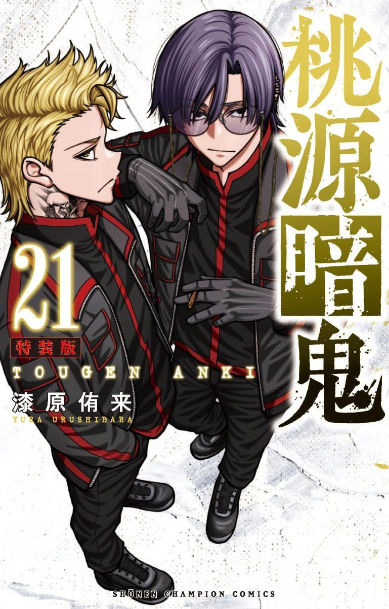

Tougen Anki
Auteur : Urushibara Yura
Artiste : Urushibara Yura
Année de publication : 2020
Genres : Action, Drame, Fantaisie
Status : En cours
Synopsis
Ichinose Shiki, héritier du sang d'Oni, a passé toute son enfance sans se rendre compte de ce fait. Cependant, lorsqu'un inconnu se précipite chez lui pour tenter de l'assassiner, son père adoptif révèle enfin la vérité. Dans un monde où Oni et Momotarou n'ont jamais pu coexister, rejoignez Ichinose dans sa lutte pour le pouvoir et l'unification des deux races !